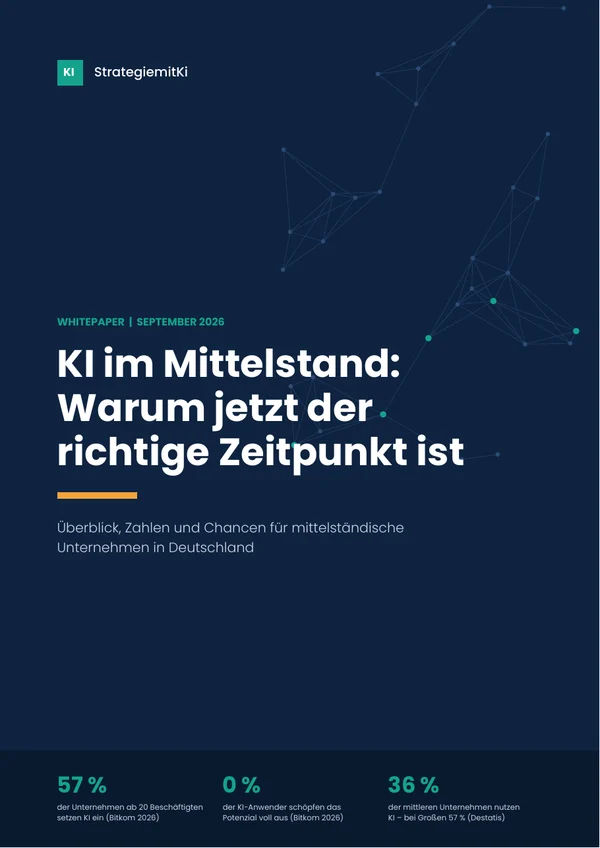
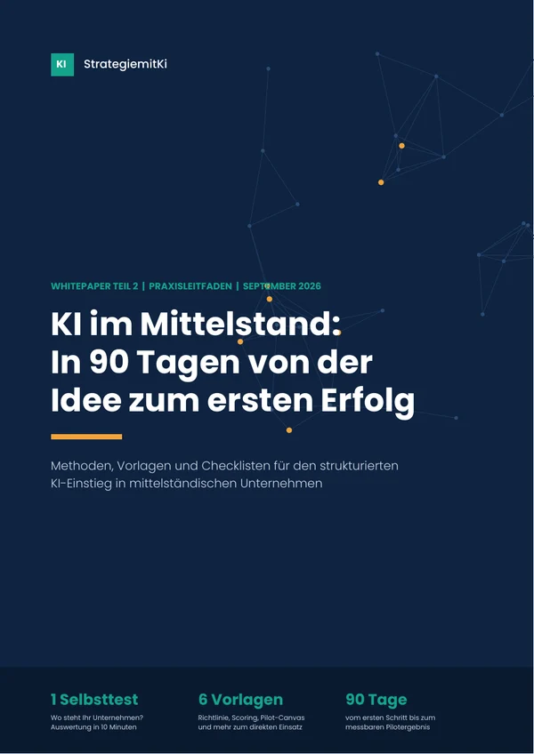
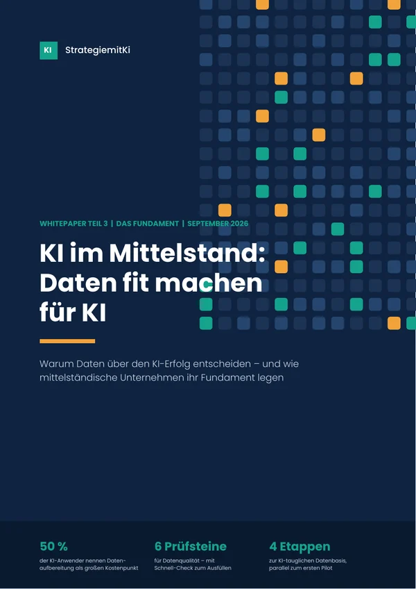
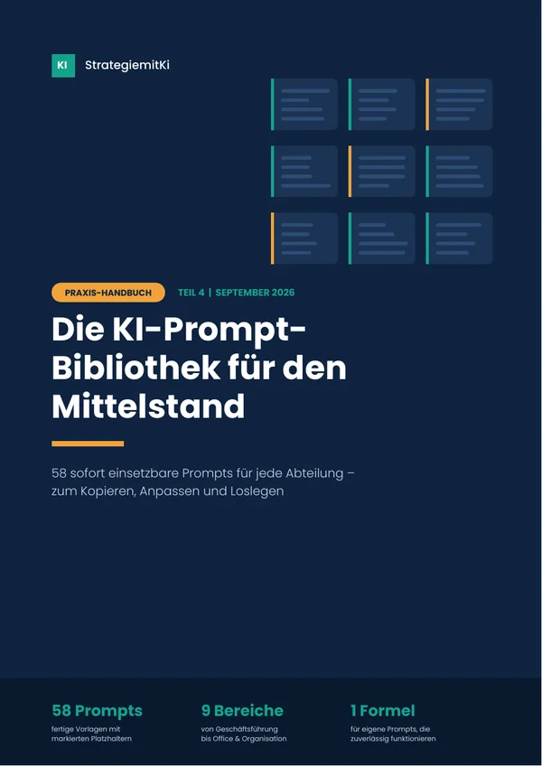

KI im Mittelstand: vom Ausprobieren zur Strategie.
Vier Leitfäden für Geschäftsführung und Führungskräfte – mit aktuellen Zahlen, Vorlagen zum Ausfüllen und fertigen Prompts für jede Abteilung.
Drei Whitepaper kostenlos, ohne Anmeldung. Praxis-Handbuch für 4,99 €.
der Unternehmen ab 20 Beschäftigten setzen 2026 KI ein – ein Jahr zuvor waren es 36 %.
Bitkom Research, September 2026der KI-Anwender schöpfen das Potenzial nach eigener Aussage überhaupt nicht aus.
Bitkom Research, September 2026der mittleren Unternehmen nutzen KI – bei großen Unternehmen sind es 57 %.
Statistisches Bundesamt, IKT-Erhebung 2025Die Reihe: in vier Schritten zur KI-Strategie
Jeder Teil baut auf dem vorherigen auf – vom Warum über das Wie bis zu den Werkzeugen für den Alltag. Sie können aber auch direkt dort einsteigen, wo Sie gerade stehen.
-

Teil 1 · Kostenloses Whitepaper
Warum jetzt der richtige Zeitpunkt ist
Wo der Mittelstand bei KI steht, warum die Größenlücke aufholbar ist und was KI wirklich kostet.
- Aktuelle Zahlen von Bitkom und Destatis
- Fünf Gründe, jetzt zu handeln
- Was der EU AI Act für Sie bedeutet
-

Teil 2 · Kostenloses Whitepaper
In 90 Tagen von der Idee zum ersten Erfolg
Der Praxisleitfaden für den strukturierten Einstieg – vom Selbsttest bis zum ausgewerteten Pilotprojekt.
- KI-Selbsttest mit Auswertung
- Musterrichtlinie, Pilot-Canvas und Checklisten
- Überblick über Fördermittel
-

Teil 3 · Kostenloses Whitepaper
Daten fit machen für KI
Warum Daten über den Erfolg entscheiden – und wie Sie Ihr Fundament Schritt für Schritt legen.
- Dateninventur und Qualitäts-Schnell-Check
- Dokumente und Erfahrungswissen KI-tauglich machen
- DSGVO, Data Act und Zugriffsrechte
-

Teil 4 · Praxis-Handbuch für 4,99 €
Die KI-Prompt-Bibliothek für den Mittelstand
58 fertige Prompts für neun Abteilungen – kopieren, Platzhalter ausfüllen, loslegen.
Mehr zum Handbuch
Bessere KI-Ergebnisse ab dem ersten Prompt
Der Unterschied zwischen einem austauschbaren und einem brauchbaren KI-Ergebnis liegt fast immer im Prompt. Das Handbuch liefert Ihnen fertige Vorlagen für den Alltag im Mittelstand.
- 58 Prompts für Geschäftsführung, Vertrieb, Marketing, Service, Einkauf, Produktion, Personal, Finanzen und Office
- Funktioniert mit Copilot, ChatGPT, Claude, Gemini und anderen KI-Assistenten
- Mit Prompt-Formel, Profi-Techniken und Sicherheitshinweisen
- Im ganzen Unternehmen nutzbar und zur eigenen Bibliothek erweiterbar
Die Bezahlung und den Download-Link erhalten Sie über unseren Zahlungsanbieter.
Sie möchten nicht allein starten?
StrategiemitKi begleitet mittelständische Unternehmen vom ersten Überblick bis zum messbaren Ergebnis – praxisnah und passend zu Ihrer Größe.
KI-Standortbestimmung
Ein Workshop mit Ihrer Führungsrunde: Wo stehen Sie, welche Anwendungsfälle lohnen sich, was sind die nächsten Schritte?
Pilot-Begleitung
Wir setzen mit Ihrem Team zwei bis drei Pilotprojekte auf, messen die Ergebnisse und bereiten die Entscheidung vor.
Daten-Check
Wir prüfen, ob Ihre Daten bereit für KI sind, und zeigen, wo sich Aufräumen am meisten lohnt.
Prompt-Workshop für Teams
Ihre Mitarbeitenden entwickeln eigene Prompts für ihre Abläufe – ein praktischer Baustein, um die KI-Kompetenz im Sinne des AI Act zu fördern.
Häufige Fragen
Kosten die Whitepaper wirklich nichts?
Ja. Die Teile 1 bis 3 können Sie ohne Anmeldung direkt als PDF herunterladen. Nur das Praxis-Handbuch (Teil 4) kostet 4,99 €.
Für wen ist die Reihe gedacht?
Für Geschäftsführung, Führungskräfte und KI-Verantwortliche in mittelständischen Unternehmen in Deutschland – ohne technisches Vorwissen.
Wie aktuell sind die Inhalte?
Alle Teile haben den Stand September 2026, inklusive der aktuellen Bitkom-Zahlen und der Änderungen am EU AI Act durch den Digital Omnibus.
Wie erhalte ich das Handbuch nach dem Kauf?
Direkt nach der Bezahlung erhalten Sie vom Zahlungsanbieter einen Download-Link per E-Mail sowie Ihre Rechnung.
Darf ich die Prompts im Team teilen?
Ja. Das Handbuch ist für die Nutzung im gesamten Unternehmen des Käufers lizenziert. Eine Weitergabe außerhalb Ihres Unternehmens ist nicht gestattet.